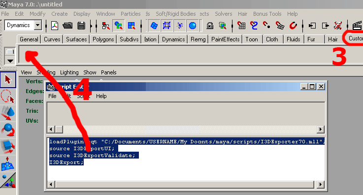

1 Maya1 i3d exporter
1.1 Installation
Step 1Place the files I3DExportUI.mel, I3DExportValidate.mel and I3DExporterXY.mll into the folder "C:/Documents and Settings/USERNAME/My Documents/maya/scripts".
Step 2
Start Maya and open the Script Editor window.

Step 3
Select custom shelf tab
Step 4
Type the following commands in the lower portion of the Script Editor:
|
loadPlugin -qt "C:/Documents and Settings/USERNAME/My Documents/maya/scripts/I3DExporterXY.mll";
source I3DExportUI; source I3DExportValidate; I3DExport; |
Note: Maya don't like backslashes so replace them with slashes.
Highlight the commands, then use the middle mouse button, to drag the highlighted MEL commands to the shelf.
Step 5 (optional)
Copy the I3D_icon.bmp into the folder "C:/Documents and Settings/USERNAME/My Documents/maya/X.Y/prefs/icons". Edit shelf to replace the default icon with the one enclosed.
1.2 Usage

Export Options
Export: IK, Animation, Shapes, Nurbs Curves, Lights, Cameras, Particle Systems and/or Default Cameras
Shape Export Subparts
Defines which parts of a shape are exported. Normals, Vertex Colors, Texture Coordinates and/or Skin Weights.
Miscellaneous
- Verbose, Display verbose information in output window during the export.
- Relative Paths, Generate relative paths for texture files.
- Float Epsilon, Truncate values within epsilon range to zero. Epsilon: [-1e-5, 1e-5]
1.3 Material export options

1.4 Known issues and problems
| Number | Issue | Workaround |
|---|---|---|
| 002 | Transformations with pivot points other than (0,0,0) are not correct exported | Don't move the pivots - move the vertices. Use the validate option to determine affected nodes. |
| 004 | place2dTexture node information is not exported | Don't modify place2dTexture nodes and operate directly on the texture coordinates. |
| 006 | Polygons with more than 4 sides and/or holes are not supported. | Triangulate affected polygons (Modeling->Polygons->Triangulate). |
1 Maya a registered trademark of the Alias Systems Corp.
I3D downloads
- GIANTS Editor v0.2.3
Date: 10.08.2007 Size: 6783KB
- Maya i3D exporter for Maya 6.5, 7.0, and 8.x v1.1.4
Date: 19.06.2007 Size: 226KB